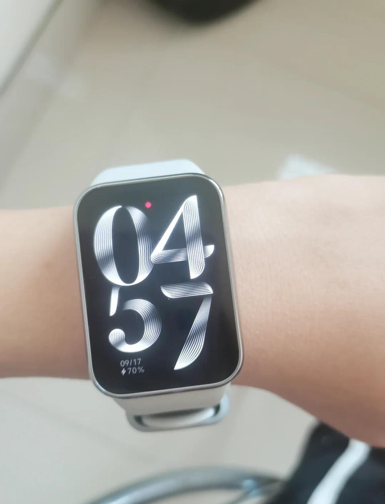

小米手环 8 Pro

小米手环 8 Pro 换上 1.74 英寸 AMOLED 大方屏，显示面积较标准版明显提升，机身依然轻至约 22.5 克。内置独立 GNSS 可脱离手机记录跑步轨迹，支持 NFC 门禁与公交、血氧心率监测，典型续航约两周，是大屏轻智能手环的代表作。
客观评测
小米手环 8 Pro 的核心升级在于 1.74 英寸 AMOLED 大屏，336×480 分辨率在手环尺寸上足够细腻，约 22.5 克的主机重量佩戴负担很小。内置独立 GNSS 支持户外跑步、骑行轨迹记录，实测搜星速度与轨迹漂移控制处于同价位主流水平；心率与血氧监测日常参考够用，与专业设备相比仍有误差。5ATM 防水、NFC 门禁公交与约 14 天典型续航，让它成为功能全面的轻智能终端，但第三方应用生态几乎为零。
主观点评
戴上去最直观的感受是“大而轻”：抬腕亮屏时那块宽屏确实比普通手环爽快许多，看消息不用眯眼凑近。跑步不带手机也能留下完整轨迹，是它区别于入门手环的分水岭。当然它本质上仍是手环——不能装 App、不能打电话，但如果你想要的是轻若无物、两周不充电的健康记录仪，它把该给的都给了。
优点与不足
- 1.74 英寸大屏信息一屏尽览，观感接近手表
- 独立 GPS 可脱离手机记录运动轨迹
- 约两周续航加磁吸充电，省心省事
- iOS 端部分功能与通知同步不如安卓完整
- 表带快拆结构手感一般，第三方表带选择有限
- 没有内置应用商店，扩展能力有限
参数规格
| 屏幕 | 1.74 英寸 AMOLED，四边等窄 |
|---|---|
| 分辨率 | 336×480 |
| 重量 | 约 22.5g（主机，不含腕带） |
| 电池 | 约 289mAh |
| 续航 | 典型使用约 14 天 |
| 定位 | 内置独立 GNSS |
| NFC | 支持门禁卡与公交卡（以开通城市为准） |
| 健康监测 | 心率、血氧、睡眠、压力、女性健康 |
| 运动模式 | 150+ 种运动模式 |
| 防水 | 5ATM |
| 传感器 | 光学心率、加速度、陀螺仪、环境光 |
| 充电 | 磁吸顶针充电 |
| 兼容 | Android 8.0 / iOS 12 及以上 |